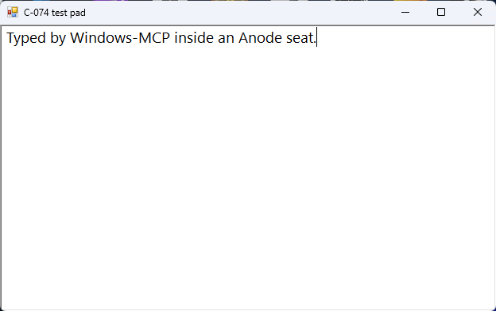

Windows-MCP in the background: run it in Anode's hidden Windows session
Tested on 22 October 2026: we started Windows-MCP 0.8.8 inside Anode's hidden Windows
session (the seat), and all 13 of its tool calls returned without an error (7 from a script, 6 from Claude
Code), with no USER_CONTROL pause from its control gate, while the pointer on the PC's own desktop,
sampled every 50 ms for 240 s, never moved and its foreground window never changed. Nobody used the PC during
the run, so it shows that the agent's clicks and typing stayed in the seat, not yet that the gate ignores you while
you work: we expect it to, because Windows' global input hooks see only their own desktop
(Microsoft's
SetWindowsHookEx docs), but we haven't measured it. Anode needs Windows 10/11 Pro, Enterprise or Education. Method,
data and the setup steps are below.
We make Anode. Windows-MCP is CursorTouch's project (MIT); we don't maintain it, and this page isn't affiliated with it. Our numbers come from one run that you can repeat with the scripts listed under Method; everything about Windows-MCP's own behaviour links to its README, issues or source. If we got something wrong, open an issue and we will correct it.
The short answer
- To let it work while you keep using the PC, on today's 0.8.8: start Windows-MCP inside Anode's seat, a second Windows session for your account with its own screen, pointer and keyboard focus. In our run the agent's clicks and typing stayed in the seat. Your own input stays in your session, so the gate should have nothing to react to; we haven't yet measured that with someone at the PC. The steps are below.
- If you are on Windows Home: this doesn't work. Anode needs Windows 10/11 Pro, Enterprise or Education.
- If you want to watch the agent work on your own desktop: plain Windows-MCP with the gate on. There, the gate is what lets you take over.
- If you just want the gate off: Windows-MCP's
mainbranch has an opt-out (--no-control, #458) and gate policies (#466). You can install it from GitHub today, but no release has them yet; #475 asks for one. With the gate off, you and the agent share one pointer again. See when to use something else. - If you need a security boundary: neither. Use a virtual machine or Windows Sandbox, as Windows-MCP's SECURITY.md suggests. The seat runs as your user, with your files and network.
- If you mean Windows-MCP's own background task (
windows-mcp install, which its README offers to start it at every sign-in): that still runs in your own session, where the gate sees your input. This page is about running it where your input doesn't reach it.
Why Windows-MCP pauses when you touch your mouse
Windows-MCP 0.8.8 (10 October 2026) added a control gate
(#445). While the agent holds control, during each
call and for 15 seconds after it, the gate holds back your physical keyboard and mouse input, and only moving the mouse
substantially or pressing Ctrl+Alt+Shift+Backspace takes control back. Once the agent has been idle for 15
seconds, any physical key press, click or mouse movement on its desktop hands control to you. Either way, new tool
calls are then refused with the USER_CONTROL code until your mouse and keyboard have been idle for 10
seconds (control.py
at v0.8.8; the ControlStatus entry in its
README at v0.8.8;
#457). In 0.8.8 the gate holds back every tool
except ControlStatus, including ones that don't drive the desktop, such as Clipboard,
WaitFor and DisplayInventory
(#456; the README on main describes its
new strict policy as the previous behaviour). And it can't be turned off: as #475 reports, 0.8.8 has no
--no-control option and silently ignores the [control] settings that the README on
main documents. The reporter of #457 uses the same PC while the agent runs long jobs, and found the agent
blocked most of the time after updating.
What we measured
Windows-MCP 0.8.8 from PyPI on Python 3.14.7, telemetry off, served over streamable HTTP on 127.0.0.1:8765 and started inside the seat of Anode 0.11.3 (Windows 11 Pro, build 26200; seat 1280x720). A sampler on the PC's own desktop read the pointer position, the foreground window and the input idle time every 50 ms for 240 s, which covered both client runs.
| Check | Result |
|---|---|
| Session of the process listening on port 8765 | The seat's (session 3), not the PC's own (session 1) |
| Tool calls: script (fastmcp client) | 7 of 7 returned without an error: ControlStatus, App (start the test window), Snapshot, Type, Screenshot, Snapshot, ControlStatus |
Tool calls: Claude Code 2.1.302 (Sonnet, claude-sonnet-5-5) | 6 of 6 returned without an error: ControlStatus, App (switch), Snapshot, Type, Screenshot, ControlStatus. Five Windows-MCP tools were pre-approved (not Click), and it used Claude Code's ToolSearch once to load them. Its Type line landed in the middle of the existing text (see the limits). |
USER_CONTROL or TAKEOVER_PENDING | In no tool result and not in the server log |
ControlStatus | ready before, ai after: the agent held control at the end |
| The PC's own pointer, 4,762 samples over 240 s | 1 position: it never moved |
| The PC's own foreground window | 0 changes |
| The PC's own input idle time | Over 9 hours throughout: nobody used the PC |
| Anode's pointer guard | Its count stayed at 8 before and after: nothing to block |
Text typed by the script's Type | Arrived in the test window inside the seat (screenshot below) |
| Call times (script run) | ControlStatus 0.01–0.5 s, App 0.1 s, Type 1.4 s, Screenshot 0.4 s, Snapshot 16–26 s |

Type call, from the seat's own
screen, cropped to the window.Data: script run, Claude Code run, the PC's own desktop (the sampler kept window title lengths, not titles), session and pointer-guard checks, the test window's text, exact package versions.
Set it up
These are the steps from Anode's guide, Keep working while Windows-MCP clicks, which is kept up to date. Our run used the same server command apart from the flags noted in step 2; the other differences are listed under Method. You need Anode installed and set up and uv. Windows-MCP 0.8.8 needs Python 3.14 or later (PyPI's requirement; its README still says 3.13+).
1. Install Windows-MCP in a folder of its own
uv venv --python 3.14 C:\tools\windows-mcp
uv pip install --python C:\tools\windows-mcp\Scripts\python.exe windows-mcp==0.8.8
New-Item -ItemType File C:\tools\windows-mcp\config.toml # an empty config of its ownIf uv picks a free-threaded build (3.14t), pywin32 won't install. Name a regular build instead, for
example --python cpython-3.14.7-windows-x86_64-none.
2. Save a start script
Save this as C:\tools\windows-mcp\start-windows-mcp.cmd. It listens on 127.0.0.1 only, turns off
Windows-MCP's anonymous telemetry, enables the same six tools as our run (it called five of them; Click wasn't needed),
and writes a log next to it.
@echo off
set ANONYMIZED_TELEMETRY=false
"%~dp0Scripts\windows-mcp.exe" serve --config "%~dp0config.toml" --transport streamable-http --host 127.0.0.1 --port 8765 --tools ControlStatus,App,Type,Click,Screenshot,Snapshot >> "%~dp0server.log" 2>&1--config points at the empty file from step 1, so a ~/.windows-mcp/config.toml left from an
earlier setup (an auth key or TLS) can't break the plain http:// client config below. A
WINDOWS_MCP_AUTH_KEY environment variable still would, and the seat has your user's environment. Our run's
script had no --config and added --debug (as run);
--config is documented in Windows-MCP's 0.8.8 README, not run by us. Any program on your PC can reach the
port, and Windows-MCP's other tools include a PowerShell runner, so enable only the tools you need; its
--auth-key adds a bearer-token check.
3. Start it in the seat
anode run starts a program inside the seat. Like every desktop command, it needs the desktop lease, which
you release straight after. If you sign in to Windows with a PIN or Windows Hello, a new seat may stop at sign-in:
choose Sign in… from the Anode tray icon (troubleshooting).
$env:ANODE_AGENT_ID = 'windows-mcp-start'
$lease = anode lease acquire | Out-String | ConvertFrom-Json
if ($LASTEXITCODE -ne 0) { throw 'Desktop acquisition failed.' }
$env:ANODE_LEASE_TOKEN = $lease.leaseToken
anode run C:\tools\windows-mcp\start-windows-mcp.cmd | Out-Host
anode lease release | Out-HostGive it about 15 seconds to start listening (ours took 14), then check that the server runs in the seat's session,
which anode status prints as seat session, not in yours:
Get-NetTCPConnection -LocalPort 8765 -State Listen |
ForEach-Object { Get-Process -Id $_.OwningProcess } | Select-Object Id, ProcessName, SessionId4. Point your MCP client at it
For Claude Code, add this to the project's .mcp.json (the config we
used), or run claude mcp add --transport http windows-mcp http://127.0.0.1:8765/mcp. Other clients that
speak streamable HTTP use the same URL.
{
"mcpServers": {
"windows-mcp": { "type": "http", "url": "http://127.0.0.1:8765/mcp" }
}
}5. Stop it when you're done
End the process that holds the port. This works across sessions:
Get-NetTCPConnection -LocalPort 8765 -State Listen | ForEach-Object { Stop-Process -Id $_.OwningProcess }Don't run windows-mcp install for this: its sign-in task would also start Windows-MCP in your own
session, where it competes for the port and your pointer.
What this does and doesn't show
- Nobody used the PC during the run (no input for over 9 hours), so the gate had no physical input to react to anywhere, and this run doesn't show that your own input leaves the gate in the seat alone. We expect it to: the gate's low-level hooks see only their own desktop (Microsoft's docs), and the seat is a separate session with its own desktop and input queue (Anode's architecture), so your physical input shouldn't reach the gate's hooks or its raw-input listener either. We haven't measured it while someone works. The sampler flags pointer moves made while the PC's own input is idle; moves during your own input can't be told apart that way, so that run needs idle gaps or a second check.
- The seat removes your input as a trigger, not every trigger. In 0.8.8 the gate can also report
USER_CONTROL, or stay atCONTROL_UNAVAILABLE, when its on-screen indicator stalls for more than a second, with nobody touching anything (#465, open; #478 is a related open report). That happens inside Windows-MCP, so it can happen in the seat too; restart the server if it sticks. Our run didn't hit it. - Taking control yourself: if you press Take control in Anode's viewer, your input does reach the seat, and the gate should then pause the agent as it would on your own desktop. Not tested.
- Where your pointer was: away from Anode's hidden viewer. If it rests over the viewer's rectangle, Anode's pointer guard stops seat programs from moving it (architecture); in this run its count didn't change.
- The seat is a desktop of your own account, not an empty sandbox. Programs that start when you sign in also open there; two of ours did, and we minimized them for the run and restored them after. Windows-MCP's Screenshot and Snapshot see the whole seat, so close or minimize what you don't want captured.
- Your clipboard: Windows-MCP 0.8.8 types text of 20 or more characters by pasting it through the
clipboard (service.py
at v0.8.8), as both of our lines were. Anode keeps the seat's clipboard separate by default; if you start the seat
with
--clipboard, the agent's typed text passes through your own clipboard (Anode's SECURITY.md). From the source and docs, not tested. - Snapshot took 16–26 s. The slower call included four failed attempts on one window that UI
Automation could no longer read (
UIA_E_ELEMENTNOTAVAILABLE). We didn't time it outside the seat; #475's reporter measured 25–35 s on 0.8.8 and about 2 s onmain, on their own busy desktop. - Claude Code's
clear: truedidn't empty the test window: its line went into the middle of the script's (the window's text), and the agent said so in its own report. Windows-MCP's clear presses Ctrl+A, then Backspace (service.py at v0.8.8); the test window is a plain WinForms text box that ignores Ctrl+A, so Backspace removed only one character. That is about the test window, not the gate. We used it instead of Notepad because Windows 11 Notepad keeps its tabs per user, so a Notepad in the seat can open the tabs you left unsaved in your own session. - Windows-MCP doesn't take Anode's lease. If other agents use Anode's own tools at the same time, both act in the seat. Don't run both at once.
When to use something else
Windows-MCP on your own desktop, gate on
When you want to see every click as it happens, take over with your mouse, or you're on Windows Home, this is the simpler setup: one tool, no second session, and the gate exists for exactly this.
Windows-MCP's main branch (unreleased)
Its main README, read at 0ffef41 on 22 October 2026, documents three gate policies. The
default, relaxed, gates only direct input (Click, Type, Scroll, Move, Shortcut, MultiSelect, MultiEdit,
and App switch and resize), so Snapshot, Screenshot, FileSystem, Registry and PowerShell can run while you use the
computer. --no-control turns the gate off, and the README warns that the agent's desktop actions can then
interfere with your own input. No release has these yet. You can try them now by installing main from
GitHub, as #475's reporter did, at the cost of running unreleased code; they report that the opt-out works there
(ControlStatus shows the gate disabled, on main as of 16 October). From its README and
#475, not run by us. Choose it
if your agent mostly runs commands, files and screenshots, as in #457: then the relaxed policy may be all you need.
Clicks and typing still wait until you've been idle.
Windows-MCP 0.8.7
The reporter of #457 suggests pinning windows-mcp==0.8.7 (30 September 2026), the release before the gate
(#445 shipped in 0.8.8). The agent then runs while you
work, on the same pointer and keyboard focus as you, and you give up 0.8.8's other changes, such as its UI Automation
threading fixes (#449,
#451) and a way to keep processes out of Snapshot's UI
Automation walk (#450). Its cursor-tracking and
input-latency fixes (#447, #448) repaired code the gate added, so 0.8.7 never had those bugs. From #457, the pull
requests and the 0.8.8 release notes, not
run by us.
A virtual machine or Windows Sandbox
When the agent's work must not reach your files, accounts or network, run Windows-MCP in a virtual machine or Windows Sandbox, as its SECURITY.md suggests. Anode's seat is desktop isolation only: it runs as you (what the seat is not isolated from).
Anode's own MCP server, without Windows-MCP
Anode's server does the same jobs in the seat (windows, accessible controls, screenshots, clicks and typing) with the lease built in, so you run one tool instead of two. Choose Windows-MCP in the seat when you already use its tools, prompts or clients, or want its PowerShell, Registry and FileSystem tools. Both are compared in Windows desktop automation for AI agents.
WindowsPC-MCP
ShikeChen01/WindowsPC-MCP came up in these searches. It is a different MCP server, not a way to run Windows-MCP: its README says it gives the agent its own virtual display through the Parsec Virtual Display Driver (installed on first run, with one administrator prompt), keeps the agent's clicks and typing to that display, and lists Windows 10 or 11 and Python 3.12 or later. MIT, 1 GitHub star, last commit 27 May 2026. From its README, not run by us.
Anode's limits
- Windows 10/11 Pro, Enterprise or Education, or Windows Server, on x64. Not Home.
anode setupneeds one administrator prompt; it turns on the Remote Desktop host (without a firewall rule) and child sessions (what it changes).- With a PIN or Windows Hello sign-in, each new seat needs your Sign in… from the tray.
- One seat per Windows session. Builds are unsigned, so SmartScreen may warn. Anode is young: 3 GitHub stars.
Method
- The searches this page answers, run on 22 October 2026: "Windows-MCP in the background", "Windows-MCP USER_CONTROL agent pauses when I move the mouse", "run Windows-MCP without taking over my mouse and keyboard", "Windows-MCP control gate disable 0.8.8" and "AI agent use Windows desktop in the background while I keep working MCP". Listings, mirrors and CVE pages ranked. None of the search summaries found the gate's issues or a Windows-MCP setting for it; one suggested a different server (WindowsPC-MCP) or a virtual machine. None of the results was ours (results).
- The run, 22 October 2026, 09:13 to 09:22 London time: the seat was signed in, no other agent held
it, no game ran in it, and the two startup apps open there were minimized for the run. Windows-MCP was started in the
seat through Anode's MCP server (
seat_run, the same path asanode run) with this script. On the PC's own desktop,python -I parent_watch.py --seconds 240 --out parent.csv(parent_watch.py) sampled through both clients. Thenpython spike_client.py http://127.0.0.1:8765/mcp(spike_client.py) made its 7 calls, and Claude Code 2.1.302 ran this prompt on Sonnet (claude-sonnet-5-5) with the equivalent ofGet-Content agent-prompt.txt -Raw | claude -p --model sonnet --max-turns 14 --mcp-config mcp-config.json --strict-mcp-config --allowedTools mcp__windows-mcp__ControlStatus,mcp__windows-mcp__App,mcp__windows-mcp__Snapshot,mcp__windows-mcp__Type,mcp__windows-mcp__Screenshot --output-format stream-json --verbose. The test window is testpad.ps1. Comments in the published scripts were edited to remove our internal names; the code is as run. - Not done: a run with someone using the PC; the setup steps exactly as printed (our run used a scratch
folder instead of
C:\tools\windows-mcp, had no--config, was started through Anode's MCP server rather than step 3's CLI lines, and was stopped withStop-Processon a process id we looked up rather than step 5's port pipeline); and any run of Windows-MCP's unreleasedmainor of WindowsPC-MCP.
Sources
Read on 22 October 2026.
- Windows-MCP 0.8.8 (PyPI, Python 3.14 or later, MIT; 9,969
GitHub stars): README at v0.8.8
(ControlStatus,
--tools,--config,WINDOWS_MCP_AUTH_KEY, telemetry, the background task), SECURITY.md, desktop/control.py (when the gate hands control to the user, and theUSER_CONTROLcode), desktop/service.py (Type's clear and clipboard paste), release notes. - Windows-MCP
mainat0ffef41: README (Desktop control, Desktop gate policies), tools/control_policy.py (which tools each policy gates). - Windows-MCP issues and pull requests: #445 (the gate, in 0.8.8), #456 (closed), #457 (closed), #458 (merged 12 October), #464 (closed, a duplicate of #465), #465 (open), #466 (merged 16 October), #474 (closed), #475 (open), #478 (open).
- Microsoft: SetWindowsHookExW (global hooks and the caller's desktop).
- WindowsPC-MCP at
28ba4e0: README. - Anode at
bcaa8e4: WINDOWS-MCP.md (the guide this page follows), ARCHITECTURE.md, SECURITY.md.